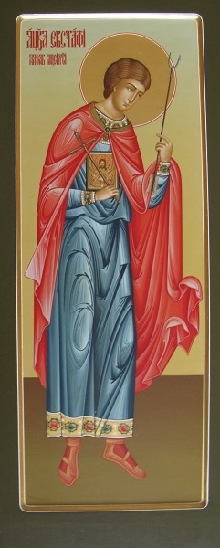
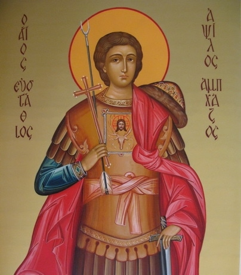
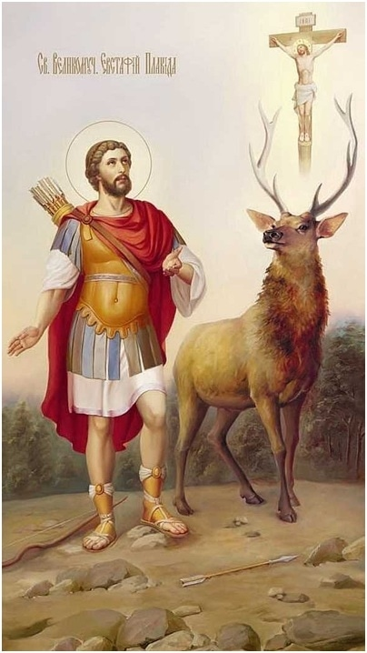
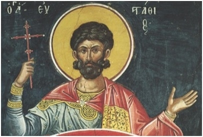
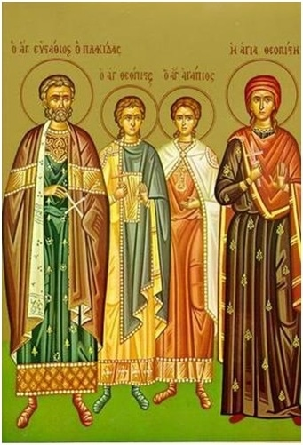
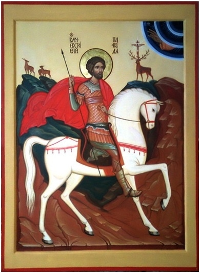

| |
Евстафий Апсильский был первым абхазским мучеником, святость которого признавалась всей Восточной Церковью. Святой правил Апсилией в начале VIII века.
Родился Евстафий во времена Юстиниана II у правителя апсилов по имени Марин. На восьмой день Марин крестил ребенка в древнем храме главной своей крепости Цибилиум, назвав сына в честь святого Евстафия Плакиды, доблестного воина, принявшего мученический венец во времена императора Трояна.
Согласно «Хронографии» Феофана Исповедника, в 738 году арабы под командованием Сулеймана, сына халифа Хишама, вторглись в горную Апсилию и Мисиминию (на юго-востоке современной Абхазии). Летописец считает, что арабы выступили против Византии, поскольку в то время эти земли входили в сферу византийского политического влияния. Евстафий Апсильский был захвачен в плен арабами при взятии ими крепости Сидерон в районе современной Цебельды. Преподобный Феофан Сигрианский говорит, что в 740 году Исам, вождь аравийский избил пленных христиан во всех городах своего владычества. Во время этих гонений на христиан пострадал и блаженный Евстафий, сын Марина. Отказавшись принять ислам, он принял мученическую кончину в городе Харране в Месопотамии. Поэтому святой Евстафий во многих греческих, латинских и сирийских источниках именуется мучеником Харранским. Позднее у мощей Евстафия Апсильского совершались многочисленные исцеления.
Икона святого Евстафия в Илорском храме
Евстафий Апсильский – один из наиболее почитаемых святых на территории современной Абхазии, он считается защитником и небесным покровителем. Существует предание, что святой Евстафий воздвиг в Цебельде храм во имя великомученика Евстафия Плакиды, украсив алтарную преграду храма каменными изразцами.В Илорском храме Святого Георгия Победоносца хранится икона Евстафия Апсильского. Он изображен в виде воина: в хитоне, доспехах, гиматии и ноговицах. Золотые, украшенные драгоценными камнями подол, поручи и шапка с меховой опушкой указывают на знатное происхождение святого. На груди Евстафия – золотой плат с изображением головы оленя: между ветвями его рогов написан лик Иисуса Христа. Этот образ заимствован из Жития великомученика Евстафия Плакиды. В левой руке Евстафий Апсильский держит меч, а в правой – крест и двухконечную стрелу, символизирующую справедливость и возмездие.
Абхазы помещали раздвоенные стрелы на иконах мучеников-воинов, в частности, на иконе великомученика Георгия Победоносца. Считалось, что в случае невыполнения обета или нарушения клятвы, данных перед такими иконами, стрелы преследуют человека – таким образом святые воины «напоминают» о данных обетах.
День памяти святого великомученика Евстафия Апсильского Абхазская церковь празднует в один день с памятью его небесного покровителя Евстафия Плакиды, 3 октября по новому стилю.

Евстафий Апсильский Святой мученик Харранский
--------------------------------------------
СВЯТОЙ ВЕЛИКОМУЧЕНИК ЕВСТАФИЙ ПЛАКИДА
Святой великомученик Евстафий до Крещения носил имя Плакида. Он был военачальником при императорах Тите (79 - 81) и Траяне (98 - 117). Еще не познав Христа, Плакида творил дела милосердия, помогая всем бедствующим и страждущим. Господь не оставил добродетельного язычника во мраке идолопоклонства.

днажды на охоте он преследовал на быстром коне оленя, который остановился, взбежав на высокую гору, и Плакида вдруг увидел между его рогами сияющий Крест, а на нем - распятого Сына Божия. Пораженный Плакида услышал глас: "Зачем ты гонишь Меня, Плакида?" "Кто Ты, Господи, говорящий со мною?" - в страхе спросил Плакида. И услышал в ответ: "Я - Иисус Христос, Бог, воплотившийся ради спасения людей и претерпевший вольные страдания и Крестную смерть. Ты Меня, не зная, почитаешь, ибо твои добрые дела и обильные милостыни дошли до Меня. Явился Я здесь, чтобы обратить и присоединить тебя к верным рабам Моим. Ибо не хочу Я, чтобы человек, творящий праведные дела, погиб в сетях вражиих".Плакида воскликнул: "Господи, я верую, что Ты - Бог Неба и земли, Творец всех тварей. Молю Тебя, Господи, научи меня, что мне делать". И вновь прозвучал Божественный глас: "Иди к священику христианскому, приими от него Крещение, и он наставит тебя ко спасению".С радостью Плакида вернулся домой, все рассказал жене; та, в свою очередь, поведала ему о том, как накануне ей в таинственном сновидении Кто-то сказал: "Ты, твой муж и твои сыновья завтра придете ко Мне и познаете Меня - Иисуса Христа, Истинного Бога, посылающего спасение любящим Меня". Супруги поступили, как им было велено.Они обратились к христианскому пресвитеру, который крестил все их семейство и всех причастил Святых Таин.На следующий день святой Евстафий отправился на место своего чудесного обращения и в горячих молитвах возблагодарил Господа, призвавшего его на путь спасения.И опять святой Евстафий был удостоен чудесного откровения - Сам Бог предупреждал его о предстоящих испытаниях: "Евстафий, подобает тебе на деле проявить твою веру. Тебе, как Иову, предстоит претерпеть многие скорби, чтобы, будучи искушенным, подобно золоту в горниле, явиться достойным Меня и принять венец из рук Моих". Святой Евстафий смиренно отвечал: "Да будет воля Твоя, Господи, всё готов я принять из рук Твоих с благодарением, только бы Твоя всесильная помощь была со мной"Вскоре на Евстафия обрушились бедствия: умерли все его слуги и пал весь скот. Разоренный, но не упавший духом, святой Евстафий с семьей покинул тайно дом, чтобы жить в безвестности, смирении и нищете. На корабле он направился в Египет. Во время плавания новое несчастье постигло святого. Хозяин корабля, прельстившись красотой жены Евстафия, безжалостно высадил его с детьми на берег, а жену оставил у себя. В великой скорби святой продолжал свой путь, и новое горе разразилось над ним. Переходя бурную реку вброд, он переносил по очереди двух своих сыновей, но пока он переносил одного - другого схватил на берегу лев и унес в пустыню, а пока возвратился к другому - того утащил в лес волк.

Потеряв всё, горько плакал святой Евстафий. Но он сознавал, что это Божественный Промысл послал ему эти несчастья, чтобы испытать его терпение и преданность воле Божией. В молитвах излив Богу свое неутешное горе, святой Евстафий пошел дальше, смиренно готовый к новым испытаниям. В селении Вадисс он нанялся рабочим и пятнадцать лет провел в непрерывных трудах. И не знал тогда святой Евстафий, что по милости Божией пастухи и землепашцы спасли его сыновей, и они жили рядом с ним; не знал он и того, что нечестивый корабельщик был скоро наказан - он умер от жестокой болезни, а жена святого Евстафия, оставшись неприкосновенной, жила в мирных трудах.В то время императору Траяну пришлось вести трудную для Рима войну. Он вспомнил доблестного полководца Плакиду и отправил воинов Антиоха и Акакия, друзей Плакиды, его разыскать.Объехав множество областей, они пришли в селение, где жил святой Евстафий. Воины встретили Евстафия в поле, где он сторожил хлеб, но не узнали его и стали говорить ему о том, кого ищут, прося его помощи и обещая большую плату. Но святой Евстафий, сразу узнав своих друзей, не открывал им своего имени. Он привел их в дом своего хозяина и накормил. Присматриваясь к нему, путники заметили, что он очень похож на их полководца, а когда увидели на его шее особую примету - след от глубокой боевой раны, поняли, что перед ними - их друг. Они обняли его со слезами и рассказали, зачем искали его. Святой Евстафий вернулся в Рим и вновь стал императорским военачальником. Много новобранцев пришло к нему в войско, и не ведал он, что два молодых воина-друга, которым он часто давал приказания и которых полюбил за ловкость и смелость, были его сыновья, и они не знали, что служат под началом своего отца и что друг другу они - родные братья.Однажды в походе войско, которое вел Евстафий, остановилось в одном селении. Воины-братья беседовали в палатке. Старший рассказывал о своей судьбе: как он потерял мать и несчастного брата, как ужасным образом был разлучен с отцом. И младший с радостью понял, что перед ним его брат, и поведал о себе.Разговор воинов слышала женщина, у дома которой была раскинута палатка, - это была их мать. Она поняла, что это ее сыновья. Еще не открываясь им, но очень желая с ними не расставаться, она пришла к их начальнику - святому Евстафию просить разрешения следовать с его войском. В нем она узнала своего мужа и в слезах рассказала ему о себе и о двух воинах, которые оказались их сыновьями. Так, по великому милосердию Господа, встретилась вся семья.К этому времени победой закончилась война. С почестями и славой вернулся святой Евстафий в Рим. Преемником умершего императора Траяна стал теперь Адриан (117 - 138), который пожелал отпраздновать события торжественным жертвоприношением богам. К удивлению всех в капище не оказалось святого Евстафия. По велению императора его срочно разыскали.

"Почему ты не хочешь поклониться богам? - спросил император. - Тебе прежде других следовало бы воздать им благодарение. Они не только сохранили тебя на войне и даровали победу, но и помогли найти жену и детей". Святой Евстафий ответил: "Я - христианин и знаю Единого Бога моего Иисуса Христа, Его чту и благодарю, и поклоняюсь Ему. Он всё даровал мне: здоровье, победу, вернул семью и ниспослал Свою помощь на одоление испытаний". В гневе император разжаловал прославленного полководца и вызвал его с семьей на суд. Но и там не удалось твердых исповедников Христовых склонить к идольскому жертвоприношению. Всё семейство святого Евстафия было осуждено на растерзание зверями. Но звери не тронули святых мучеников. Тогда жестокий император в ярости приказал бросить всех живыми в раскаленного медного быка, в котором и приняли мученическую кончину святые Евстафий, его жена Феопистия и их сыновья Агапий и Феопист. Когда через три дня открыли огненную могилу, тела святых мучеников были обретены невредимыми - ни один волос не сгорел на их главах, а лица сияли неземной красотой. Многие видевшие чудо уверовали во Христа. Христиане предали погребению честные тела святых.

Икона св.вмч Евстафия Плакиды в Храме св.вмч
Евстафия Апсильского в г.Очамчира. Абхазия
|
|